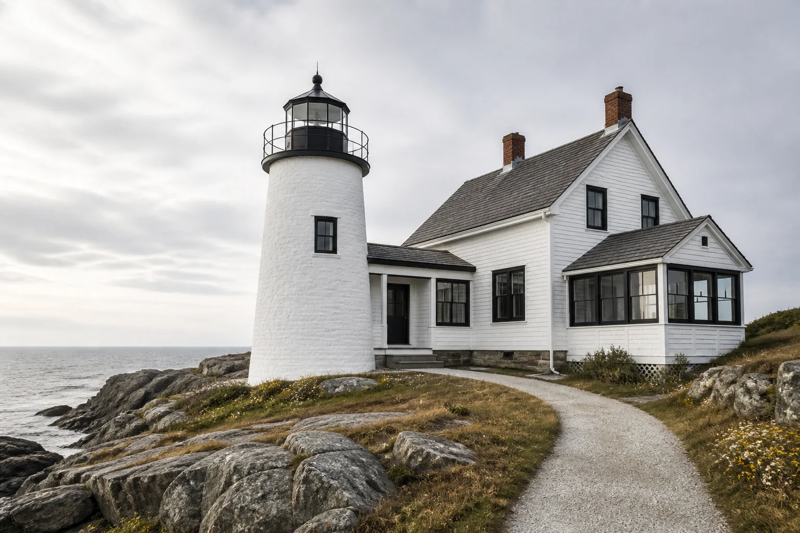
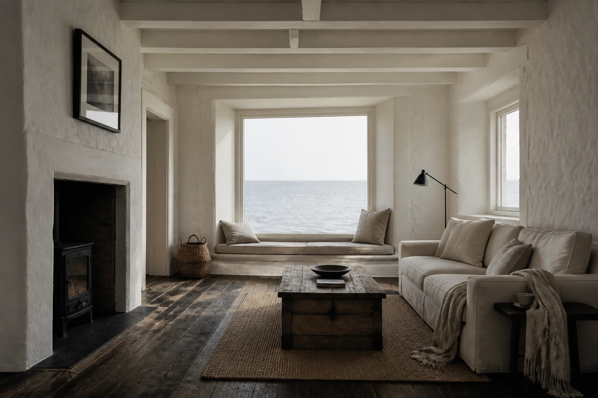
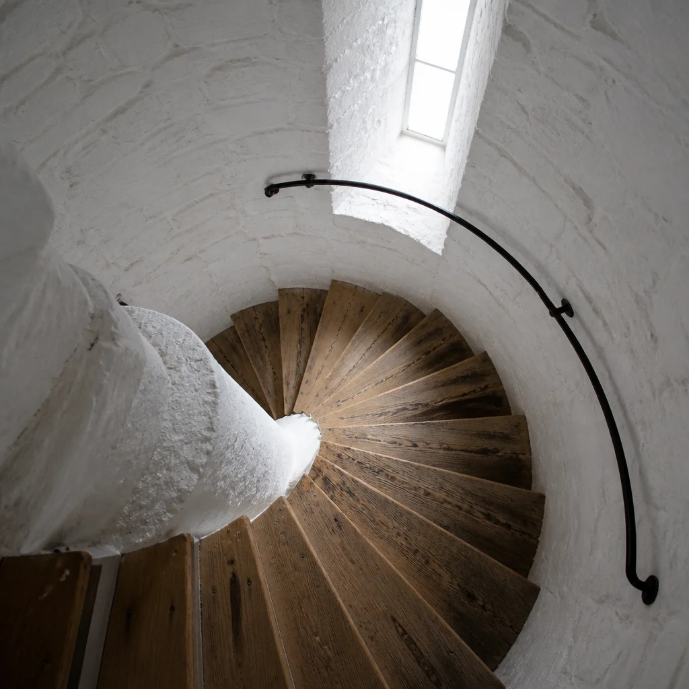
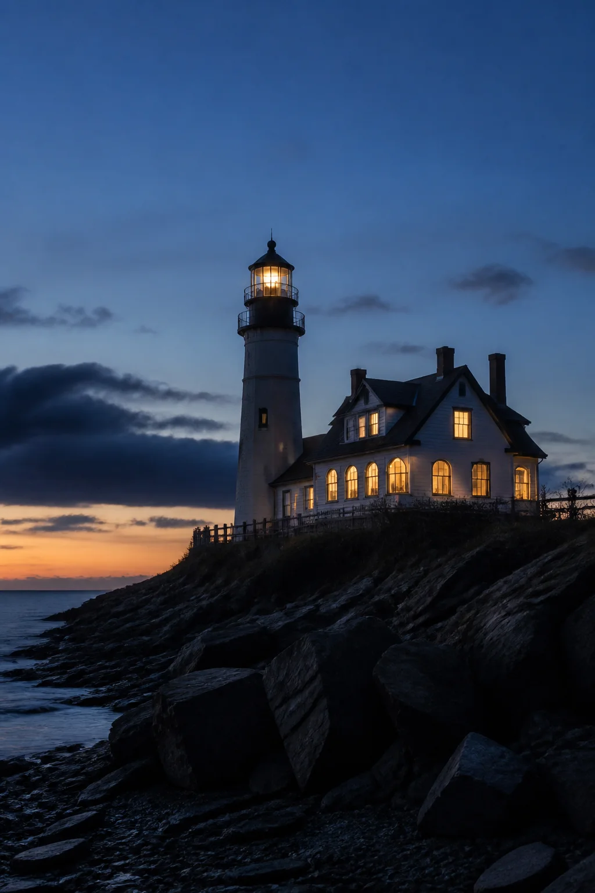

On a fictional headland battered by salt wind, a short lighthouse and its keeper’s cottage had sat empty for years. The brief was simple and impossible: keep the silhouette honest, make the cottage livable year-round, and let the sea remain the main client. This is the journey of that renovation—not a project listing, just the story.

Structure came first. Thick whitewashed masonry already knew how to stand in weather; we patched rather than replaced, sealed against driving rain, and kept the outdoor path deliberately spare. The tower stayed a beacon of form, not a gadget-filled lantern room.

Inside, the living room borrows the lantern’s logic: one big aperture, thick walls, and almost nothing competing with the horizon. Weathered timber floors soften the masonry. Furniture stays minimal so the light can do the furnishing.

The spiral stair is the building’s quiet manifesto—worn treads, daylight from above, no ornament beyond the climb itself. From the top landing you understand why keepers stayed: the view is the programme.
This is a placeholder article for testing. All content is fictional.
